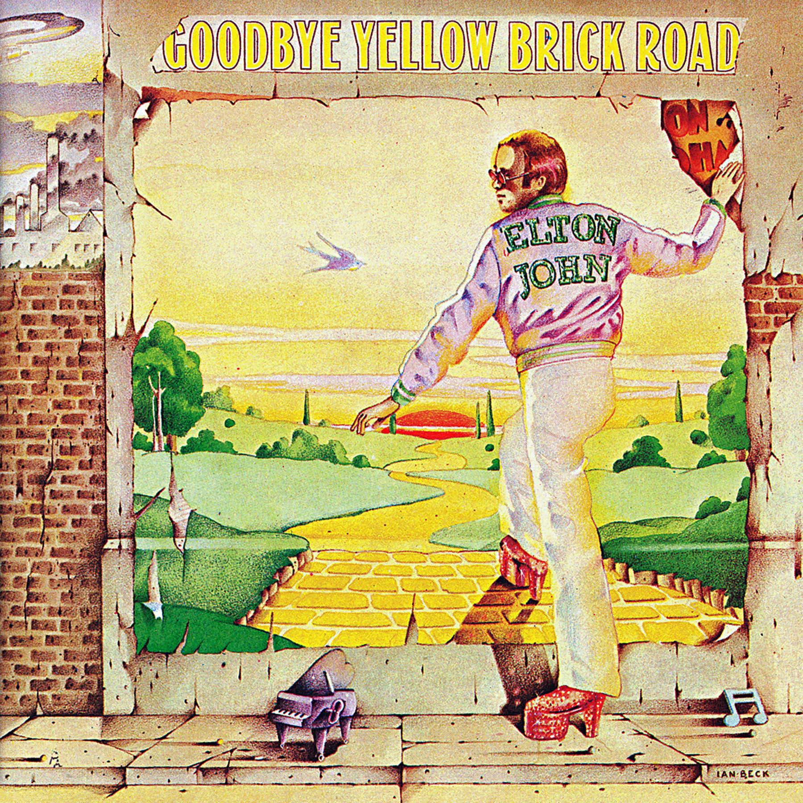

Goodbye Yellow Brick Road
Elton John


 Goodbye Yellow Brick Road is the seventh studio album by Elton John, first released in 1973 as a double LP. It was the second of his two studio albums released in the same year of 1973 (first one was Don't Shoot Me I'm Only the Piano Player released 9 months earlier). The album has sold more than 30 million copies worldwide[3] and is widely regarded as John's best.
Goodbye Yellow Brick Road is the seventh studio album by Elton John, first released in 1973 as a double LP. It was the second of his two studio albums released in the same year of 1973 (first one was Don't Shoot Me I'm Only the Piano Player released 9 months earlier). The album has sold more than 30 million copies worldwide[3] and is widely regarded as John's best.
- Funeral For a Friend/ Love Lies Bleeding
- Candle in The Wind
- Bennie and The Jets
- Goodbye Yellow Brick Road
- This Song Has No Title
- Grey Seal
- Jamaica Jerk-Off
- I've Seen That Movie Too
- Sweet Painted Lady
- The Ballad Of Danny Bailey
- Dirty Little Girl
- All The Girls Love Alice
- Your Sister Can't Twist (But She Can Rock N' Roll)
- Saturday Night's Alright (For Fighting)
- Roy Rogers
- Social Disease
- Harmony